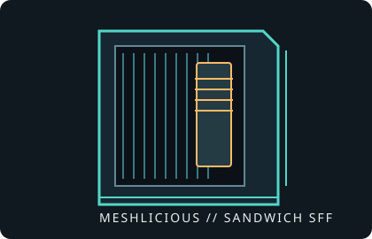

[ IDENTIFIED ENCLOSURE // 14.67 L VERTICAL SANDWICH ]
SSUPD Meshlicious
245 × 166.5 × 360 mm (L × W × H), approximately 14.67 L; a mesh-sided Mini-ITX/Mini-DTX sandwich case.

VARIANT / ARCHIVAL CAVEAT: Confirm the exact PCIe riser length, mesh or glass panels, and included accessory kit. GPU, radiator, motherboard and PSU positions are coupled; listed maxima are not all simultaneous.
Mechanical specifications and fit
| Catalog identity | SSUPD Meshlicious Mini-ITX chassis, mesh or tempered-glass panel editions. |
|---|---|
| Dimensions and clearances | 245 × 166.5 × 360 mm (L × W × H), approx. 14.67 L. GPU envelope reaches about 336 × 155 mm in compatible configurations; four-slot layouts reduce CPU-cooler space. |
| Board, GPU and cooler | Mini-ITX; Mini-DTX support depends on the longer PCIe riser. Up to four GPU slots; CPU cooler height is up to 73 mm with a three-slot GPU or about 53 mm with a four-slot card. |
| Radiator, PSU and bays | Front supports up to 280 mm radiator; radiator/fan stack and GPU placement must be checked together. Supports ATX PSU up to 170 mm or SFX/SFX-L. Up to three 2.5-inch drives in a full-GPU/SFX build; larger HDD support requires a reduced GPU configuration. |
| Revision / identification | Retain the exact riser cable and panel set with the chassis; cable orientation and GPU slot position are part of the fit envelope. |
Compatibility notes
The manufacturer advertises full-length cards to 336 mm, but check card height, thickness, power-plug bend radius and riser orientation as well as length. A 280 mm front radiator can occupy the same space needed by the GPU, and the cooler-height envelope falls when a thicker GPU is installed. Avoid assuming all maximum dimensions can be combined.
- Verify the specified GPU slot count and actual card shroud dimensions against the selected riser position.
- Confirm radiator end-tank and hose clearance before installing a 280 mm unit.
- Use only the included or manufacturer-approved PCIe riser and preserve its bend radius.
Manufacturer specifications and manual
- SSUPD Meshlicious product specificationsOfficial product page for the enclosure and configurations.
- SSUPD Meshlicious User Guide (PDF)Manufacturer-hosted installation guide and configuration diagrams.